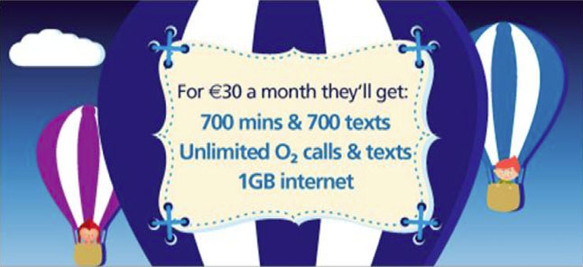

Change Freeze notice
This December
Change freeze will commence at 00:01 on Thursday 13th December and run until 00:01 on Thursday 3rd January. The change freeze is in place to protect our customer’s experience of our service over Christmas and New Year. During change freeze only changes to fix faults and avoid major incidents will be permitted. In the event of unexpected but required change an exceptions process is in place. If you have any questions on the change freeze please contact o2change@ie.ibm.com
Early Pay Day
Christmas Pay Day
As usual, pay day comes early at Christmas and will be on Monday December 17th this year for everyone. Please note that the cut-off date for overtime to be processed is close of business Wednesday 5th December.
O2 and Cork GAA
Sponsorship comes to an end
Earlier this week we confirmed in a joint statement with the Cork County Board of the GAA that our sponsorship partnership will conclude when the current contract ends on December 31st, 2012. We enjoyed a tremendous relationship with Cork GAA since 1998, and we wish only continued good fortune to all Cork teams and their loyal fans for the future.
Work email on your phone
Change to MobileIron
If you have a smartphone and receive work emails on it, then you must switch to the MobileIron service by 12th November. Please contact Bryan Tobin to get set up (please note this doesn’t apply to Blackberry users).
Bring your friends to O2
We’ve just launched a great new friends and family offer – for just €30 a month they’ll get:
700 minutes & 700 texts - Unlimited O2 Calls & Texts - 1 GB of Internet
Visit this dedicated webpage for all the info you need to get friends and family signed up. It’s also nice to know that each time you refer someone to O2 you will be entered into a draw for an iPhone 5 and tickets to the O2 to a gig of your choice – nice!
Think Big celebrates its 2nd birthday
Think Big celebrated its 2nd birthday yesterday by bringing together young people from around the country for a celebratory event in The O2, Dublin. Over the past two years O2 has invested over €1.6 million in Think Big, in partnership with Headstrong, enabling young people to do projects in their local community that make a difference to young people’s mental health. Since 2010, 200 projects have been funded across the country with up to 3,500 young people getting involved. The celebration event featured art workshops, tours of The O2 as well as an exclusive gig by Irish band Royseven. One of the focal points of the day was when the young people came together to design a large art installation to represent what Think Big has meant to them over the last couple of years.
Would you like to be more involved in fundraising activities and events for Think Big next year? The Dublin Think Big fundraising committee are now welcoming new members so if you have some great ideas for fundraising please contact Fiona Meehan.
Opportunities in Telefonica
Current opportunities include:
- Executive Assistant
- Telephone Account Manager
- Tesco Mobile General Manager
- People Analyst – EPSC
- Micro Business Acquisitions – Business Solutions Consultant
- Digital Design Lead
Want to know more? Take a look at the opportunities section of the new HR Portal.